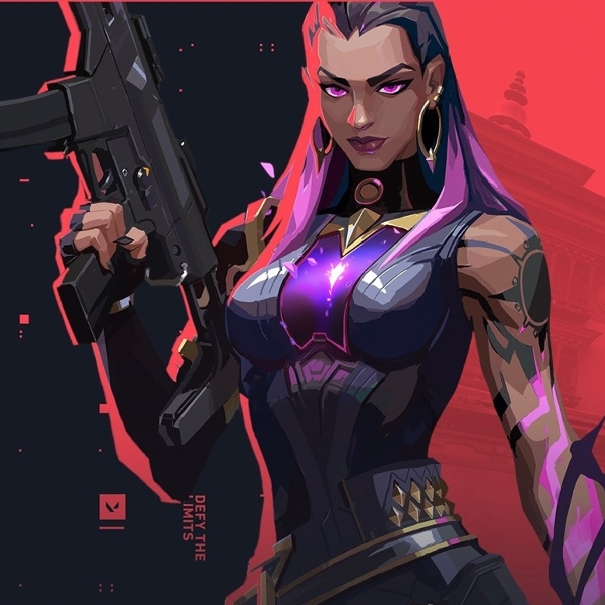
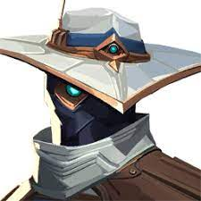
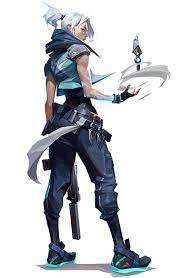
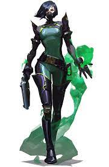
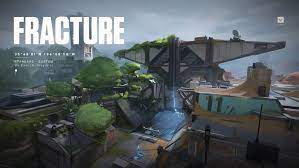
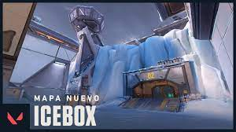
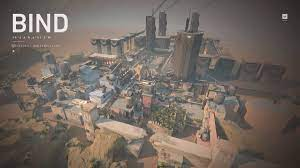
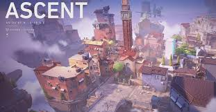
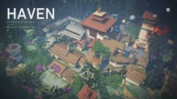

VALORANT es un shooter táctico 5v5 basado en personajes que está ambientado en un escenario internacional. Sed más listos que vuestros oponentes, superadlos con grandes jugadas y eclipsadlos con habilidades tácticas, armas precisas y trabajo en equipo adaptable.
|
|
|
|
|
|  |  |  |  | |
| Clase: Centinela.
Nacionalidad: Francia. |
Clase: Duelista.
Nacionalidad: México. |
Clase: Centinela.
Nacionalidad: Marruecos. |
Clase: Duelista.
Nacionalidad: Corea. |
Clase: Controlador.
Nacionalidad: EE.UU. |
|
|
|
|
|
|  |  |  |  |  |
Un centro de investigación ultrasecreto dividido por un experimento fallido de radianita. Con opciones de defensa tan divididas como el mismo mapa, la elección es tuya: enfrentar a los atacantes en su propio territorio o cerrar las escotillas y resistir el asalto. |
Tu próximo campo de batalla es un sitio de excavación secreto de Kingdom en algún lugar del ártico. Los dos sitios para plantar están protegidos tanto por nieve como por metal, y no es fácil acceder a ellos de forma horizontal. Aprovecha las tirolesas y nunca te verán venir |
Dos sitios. No existe un centro. Debes elegir derecha o izquierda. ¿Cuál será tu elección? Ambos ofrecen caminos directos para los atacantes y un par de teletransportadores unidireccionales facilitan el |
Un campo abierto para pequeñas batallas de posicionamiento y desgaste dividen Ascenso en dos sitios. Puedes fortificar cada uno con puertas de bombas irreversibles; una vez puestas, tendrás que destruirlas o encontrar otra forma de pasar. Cede el menor territorio posible. |
Bajo un monasterio olvidado, emerge un clamor entre los agentes rivales que se enfrentan para controlar tres sitios. Hay más territorio por controlar, pero los defensores pueden usar el terreno adicional para realizar ataques agresivos |